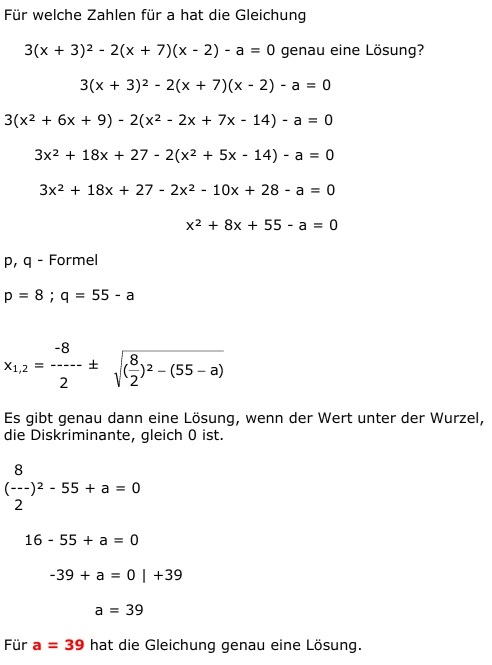

Quadratische Gleichungen Aufgabe 82 Für welche Zahlen für a hat die Gleichung 3(x + 3)² - 2(x + 7)(x - 2) - a = 0 genau eine Lösung? 3(x + 3)² - 2(x + 7)(x - 2) - a = 0 3(x² + 6x + 9) - 2(x² - 2x + 7x - 14) - a = 0 3x² + 18x + 27 - 2(x² + 5x - 14) - a = 0 3x² + 18x + 27 - 2x² - 10x + 28 - a = 0 x² + 8x + 55 - a = 0 p, q - Formel p = 8 ; q = 55 - a  Es gibt genau dann eine Lösung, wenn der Wert unter der Wurzel, die Diskriminante, gleich 0 ist. 8 (---)² - 55 + a = 0 2 16 - 55 + a = 0 -39 + a = 0 |+39 a = 39 Für a = 39 hat die Gleichung genau eine Lösung.